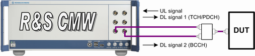

Test Setup for Scenario BCCH and TCH/PDCH
A test setup for this scenario involves one uplink and two downlink signals. One downlink signal transmits the TCH/PDCH, the other one the BCCH. The two downlink signals must be transmitted via different TX modules. It implies that the instrument must support at least two TX paths. The RF connectors to be used depend on the installed frontends.
Typical scenarios:
- Two basic frontends are installed at the R&S CMW:
Use a bidirectional RF connector for the uplink and one downlink signal and a separate RF connector for the second downlink signal. Connect both RF connectors to an external combiner and connect the combiner to the MS. - An advanced frontend is installed at the R&S CMW:
Use one bidirectional RF connector for the uplink and both downlink signals. This test setup uses the same cabling as a standard cell scenario.

Test setup using two RF connectors and an external combiner